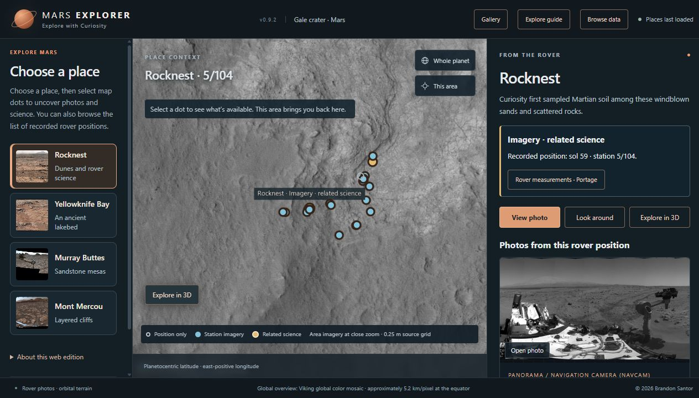
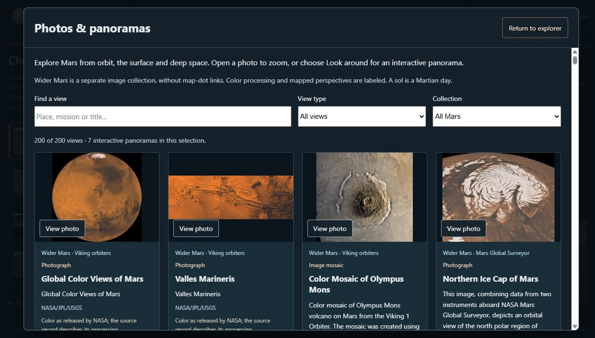

Browser edition
Open the map, look around rover panoramas, browse the image collection, and inspect the selected scientific records. No account or installation is needed. The site serves a fixed research snapshot.
Open Mars Explorer ↗I lead a five-person team building a way to explore places visited by NASA’s Curiosity rover. I developed the coordinate handling, spatial database, and terrain-processing workflow that connect rover positions, orbital images, elevation measurements, and scientific records. Mars Explorer brings those sources into one application where people can explore selected landscapes and inspect the mission evidence behind them.
Project at a glance ↓

Open the map, look around rover panoramas, browse the image collection, and inspect the selected scientific records. No account or installation is needed. The site serves a fixed research snapshot.
Open Mars Explorer ↗Includes the application, imagery, selected data, and local PostgreSQL/PostGIS database. Included material works offline; external source links need internet.
Download Windows x64 · 1.0 RC1 · 641 MB ↓Windows 10/11 x64 · Current WebGL-capable browser · Writable extracted folder
SHA-256: c66b6b8b13310547d82293682d8d207d58c422bb0cc308382634d4a4fa410a5e. Download details and preview scope ↗
Curiosity’s rover positions, photographs, orbital imagery, elevation measurements, and instrument readings are distributed across technical archives and separate viewers. I built Mars Explorer to connect those records through places people can explore. My motivation was to help people feel connected to a distant landscape while making its scientific sources accessible. The application covers selected locations in Gale Crater.
I lead the five-person team and built the database, data-preparation tools, and interactive 3D terrain system. I connect the landscape to the scientific records behind it and maintain the interface and the connections between its parts.
Working with geographic data on Earth is one thing. Learning how NASA’s mission records describe locations, and building the tools to turn those records into an explorable Martian landscape, is another.
Earth mapping settings cannot simply be applied to Mars. I worked through NASA’s documentation to determine how each dataset describes position and height, then configured the viewer around the appropriate Mars reference globe. I recorded those definitions in the database so locations expressed in degrees would not be mistaken for distances in meters or placed using an Earth reference system.
I gave the planet overview and the close-up terrain separate coordinate handling. For the ground view, I used a documented local starting point and measured east, north, and height relative to it. That lets the app position the terrain and the viewer consistently within the area covered by the data.
The mission position records use planetocentric latitude and east-positive longitude. The overview computes positions on a radius-3,396,190-meter reference sphere. PostGIS stores the angular points with SRID 0 and separately recorded coordinate definitions, rather than claiming Earth geography or meter distances.
The local surface uses MOLA-areoid elevations, Mars’s gravity-based height reference, relative to a local origin. That is separate from the overview sphere and the viewer’s synthetic eye height. Converting those source heights onto the overview sphere and physically registering rover-camera imagery to the terrain remain separate work; the current viewer does not claim either has been completed.
The elevation grid and orbital image did not share the same pixel spacing or starting position. I built the processing that calculates where each elevation sample falls within the image’s own grid, including fractional offsets. A simple scale-up would not establish that alignment. I then used those samples to construct the triangular surface, apply the image to it, and calculate the surface directions used for shading. Python, NumPy, Rasterio, and GDAL prepare the geometry and image for Cesium, the 3D viewer.
At Rocknest, elevation samples are spaced 1 meter apart and imagery uses a 0.25-meter grid where source products are available. These are sample spacings, not accuracy measures. Across the prepared areas, ground-level exploration uses a synthetic 1.7-meter eye height, with an optional elevated view. The viewer keeps movement inside the supported terrain area. Its viewing position is synthetic; it does not reproduce a calibrated rover-camera position.
I designed the spatial database to connect a location with its mission records without collapsing different observations into one event. Its 41 connected tables retain rover positions, science observations, archive products, exact source files, and the relationships between them. I implemented the PostgreSQL/PostGIS storage and read-only FastAPI service that supply those records to the interface and database browser.
A rover position does not automatically locate its camera or a nearby science target. The position and measurement can also come from different sols, or Martian days. I kept their observation times, reference systems, and source-reported precision distinct while recording the supported connection between them. This allows a visitor to inspect the association without being given a falsely exact location or time.
Visitors can explore Rocknest, Yellowknife Bay, Murray Buttes, and Mont Mercou, inspect source records, and open the prepared terrain packages. The database includes rock-chemistry measurements from the rover’s Alpha Particle X-ray Spectrometer (APXS) at Rocknest and the Flaherty target at Yellowknife Bay, with links to their sources. Each record keeps its observation time, reported precision, nearby study station, and original source. Linking records does not mean they were collected at exactly the same place or time.
The searchable gallery contains 200 curated images, with filters for collection and view type. It reaches beyond Curiosity to orbital landscapes, the polar caps, volcanoes, Mars’s moons, and other missions. Each entry keeps its source link, credit, and processing note, so visitors can distinguish a photograph from enhanced color or a mapped perspective.
Within the explorer, 41 displayed rover stations connect the map to the mission record: 37 have linked imagery, while four are explicitly position-only. Twelve native rover-camera mosaics support the selected areas; the gallery offers seven interactive panorama choices. Missing directions remain blank instead of being filled with an invented landscape.
I published a browser edition and packaged a Windows edition with its own data and database. Both offer a guided introduction and clear starting choices for exploring places or browsing photographs. I added an About and help panel that identifies the version and lets a visitor copy useful details when reporting a problem.
I corrected gallery resizing errors and checked rapid image changes, photo zoom, and returning from source records. The Windows package also ran from a physical USB drive and restarted after its folder was moved. Version 1.0.0-rc.1 is a release candidate: these workflows have been checked, while broader device and accessibility testing remains open.
Visitors can move between the map, photographs, science records, and source information. Returning from a source preserves the reader’s place and open details. The browser edition publishes a fixed, read-only scientific snapshot; the Windows edition includes the local database and its inspector. These are saved mission records, not a live spacecraft feed.
The terrain reconstructs selected areas from orbital elevation and imagery. Rover panoramas are separate source images with their original coverage gaps; they are not precisely registered camera views inside that terrain. Ground-level viewing height and the sunset appearance are simulated presentation settings.
The current portable package is version 1.0.0-rc.1, build desktop-3934e5ebc253. Its archive hash is recorded with the download. Recorded checks covered all 200 gallery images, terrain in all four areas, panoramas, photo zoom, source-record return, and running from a physical USB drive. I also confirmed simultaneous keyboard movement and mouse-look. Testing on a second physical computer remains pending. A 40-minute desktop stability check completed 42 mixed-use cycles with bounded memory and no runtime errors. Rapid place-to-3D map return and stale packaged documentation were repaired. Physical phone coverage, assistive-technology and unfamiliar-visitor checks remain unverified. The launchers are unsigned. Read the supplied platform, security, and license guidance.
Explore each stage of the work.
The project combines NASA Planetary Data System (PDS) rover-position records, orbital elevation and image grids, rover photographs, and Alpha Particle X-ray Spectrometer (APXS) readings. Each source package is versioned so its origin remains clear.
I designed the database relationships to connect mission records while retaining their separate positions, observation times, reference systems, and reported precision.
I calculated the alignment between separate image and elevation grids, constructed textured triangular surfaces, and built movement that follows the prepared terrain within its supported bounds.
Destinations, source inspection, photographs, and the database browser connect the visual view to its records.